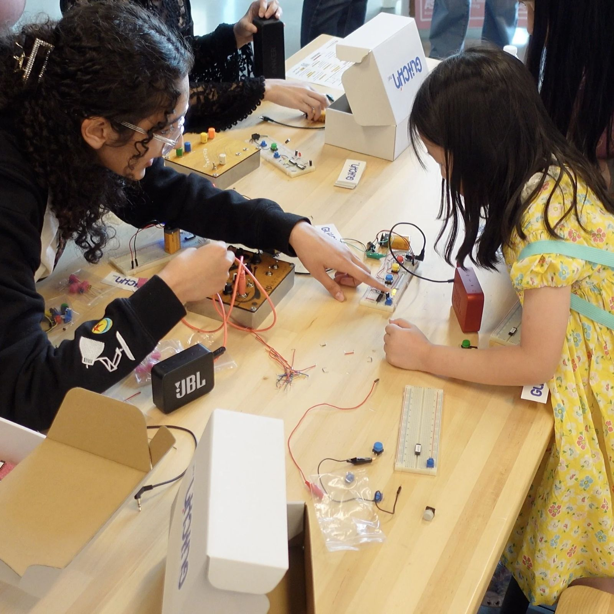
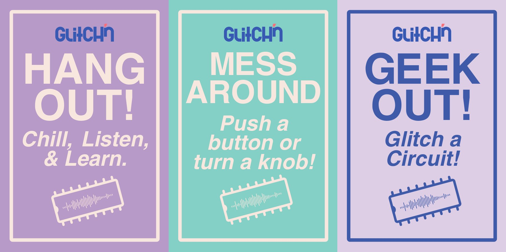
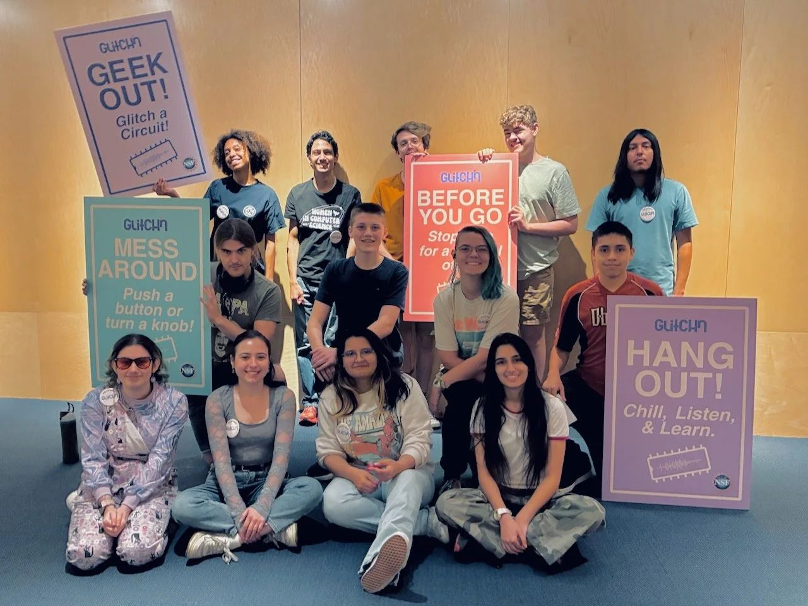
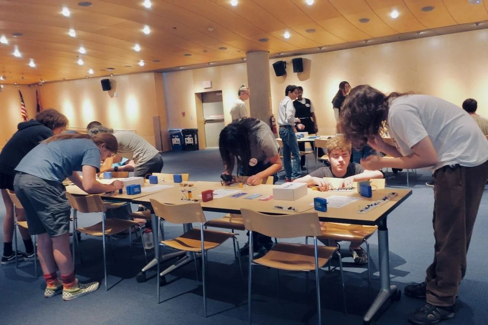
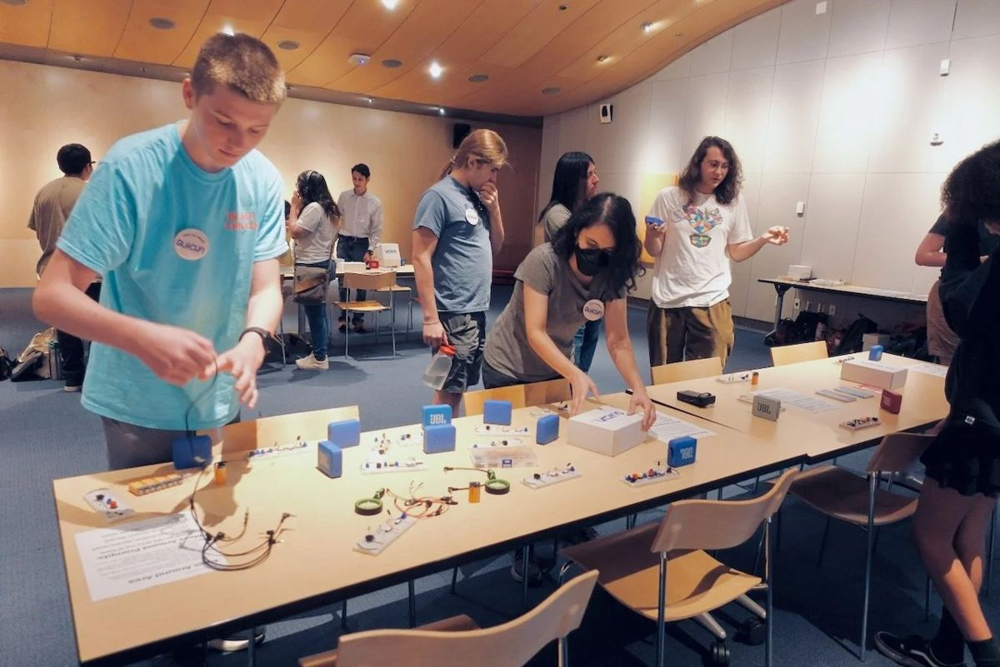
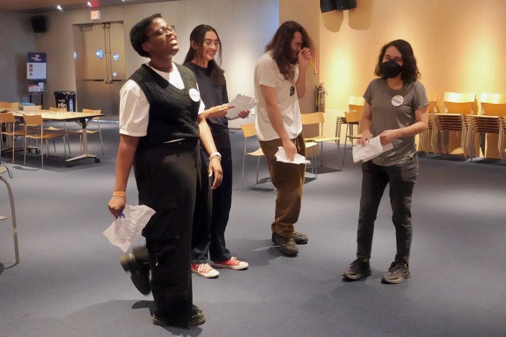
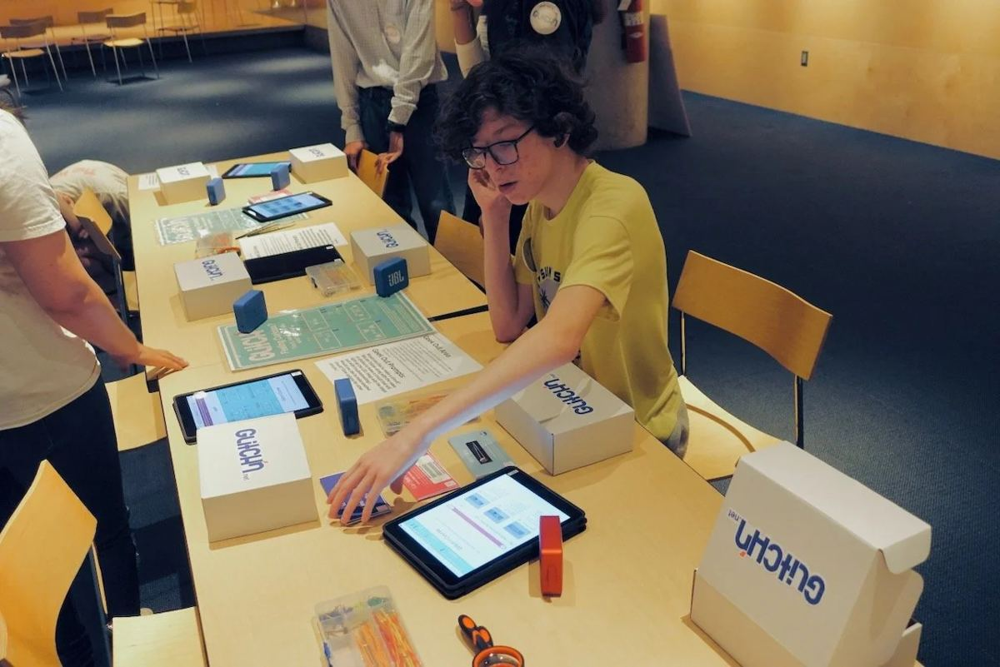
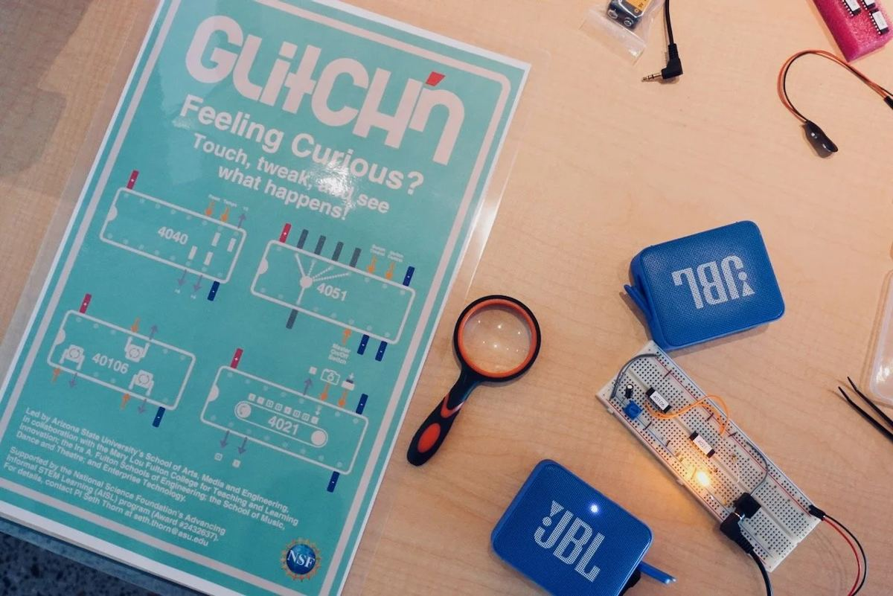
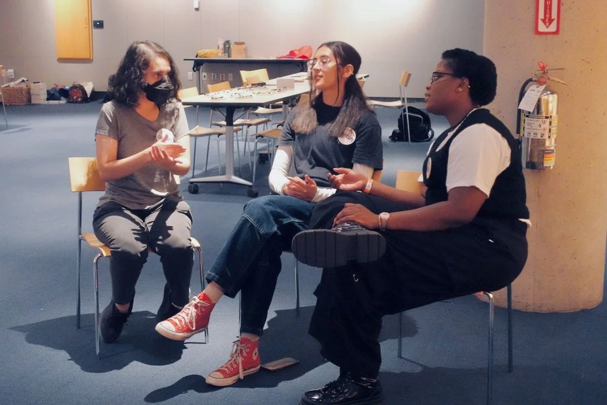
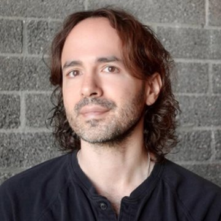

Music first. Circuits next. Careers after that.
Glitch'n is a free program from Arizona State University that teaches young people electronics by building circuits that make music. Graduates become paid interns who teach what they learned to their own community.

- 60young people and family members in the first courses, June 2025
- 14course graduates hired as paid CTRL interns
- 6public pop-up events in Phoenix, 2025 and 2026
- 5free video lessons online, with more on the way
Funders
Partners
Why it matters
Phoenix is one of the country's centers for microelectronics and semiconductors, with Intel, NXP and TSMC nearby. Yet many young people never see themselves in that work. Traditional, step-by-step STEM pathways lose students who learn best by doing, trying and getting things wrong.
Glitch'n starts somewhere else: with sound. A "glitch" is a sudden malfunction. We treat it as an invitation. Students build small circuits that blink, click and make rhythms, bend them on purpose, and learn how chips, resistors and capacitors work along the way. Careers in electronics open at many levels, from a high-school diploma to an engineering degree. Glitch'n is a first step onto any of them.
How it works
The model is learning by teaching. We call it a community circuit: each group of learners becomes the next group of teachers.
- 1CourseA free, five-day course. Students build a blinking light, then a drum machine, then their own instruments.
- 2CTRL internshipGraduates are paid to co-lead pop-up workshops in public places, with the teaching and research team.
- 3TeachingInterns grow into course teachers, and recruit the next group.
Pop-ups are laid out in three zones so everyone can join at their own level: hang out and watch, mess around with finished circuits, or geek out and build one from scratch.

Results, 2025
- 93%of course participants said they understood technology better
- 90%of course participants developed or strengthened an interest in a STEAM career
- 62%of pop-up visitors had never played with circuits before
- 93%of pop-up visitors felt more confident exploring circuits afterwards
End-of-course survey (58 participants) and pop-up exit survey (96 visitors, ages 6 to 91).
Milestones
- Aug 2024The National Science Foundation funds Glitch'n.
- Jun 2025Three free courses at the ASU MIX Center in Mesa: 60 young people and family members.
- Jul 202514 graduates become the first CTRL interns and co-lead three pop-ups at Burton Barr Central Library, Phoenix.
- Oct 2025A grant from ASU's Herberger Institute for Design and the Arts starts Glitch'n AI: musical circuits that work a little like neurons.
- 2026A gift from the Qualcomm Foundation, and three pop-ups at the Phoenix Conservatory of Music.
- Oct 2026The course becomes free video lessons, open to everyone.







What support makes possible
Every course and pop-up needs kits, paid teen facilitators and places to meet. Support helps us run more courses and pop-ups across Phoenix, put a kit in every learner's hands, pay more young people to teach, and keep adding free lessons to this site, so anyone, anywhere, can build along.
Team

Assistant Professor of Interactive Media in ASU's School of Games, Arts, Media and Engineering, and principal investigator of the NSF grant. Seth created Glitch'n and designs its circuits and lessons. He received the GAME School's inaugural Teaching Innovation Award in 2024, holds a PhD from Brown University, and is a two-time finalist in the Guthman New Musical Instruments Competition.
seththorn.netAdvisory board
- Suren Jayasuriya, PhDAssistant Professor, Electrical Engineering, Arizona State University
- Rob Stenson, EdDChairman of the Board, Neurodiversity Education Research Center
- Ruth Wylie, PhDCo-Director, Center for Science and the Imagination, Arizona State University
- Jennifer Yu, ScDSenior Principal Scientist, SRI International
Publications and talks
- 2026Akinbadewa, B., Reutlinger, C., Vasquez, A., & Thorn, S. From frustration to creativity: Exploring how neurodiversity-affirming learning contexts transform uncertainty into strengths. International Conference of the Learning Sciences (ICLS 2026), ISLS.
- 2026Pivovarova, M., Reutlinger, C., Sanchez Chavarria, K., & Thorn, S. Building confidence in STEM one chip at a time. Association for Education Finance and Policy (AEFP), Chicago.
Funding and partners
- 2024 to 2027U.S. National Science FoundationAdvancing Informal STEM Learning, Award 2432637
- 2025ASU Herberger Institute for Design and the ArtsA grant for Glitch'n AI
- 2026Qualcomm FoundationA gift to Glitch'n
Led by ASU's School of Games, Arts, Media and Engineering, with the Mary Lou Fulton College for Teaching and Learning Innovation, the Ira A. Fulton Schools of Engineering, the School of Music, Dance and Theatre, and Enterprise Technology. Pop-ups hosted by Burton Barr Central Library and the Phoenix Conservatory of Music. Community partners include Boys & Girls Clubs of the Valley and the Arizona Science Teachers Association.
Glitch'n is funded by the National Science Foundation and is looking for partners and sponsors, especially in industry.
Email Seth Thorn